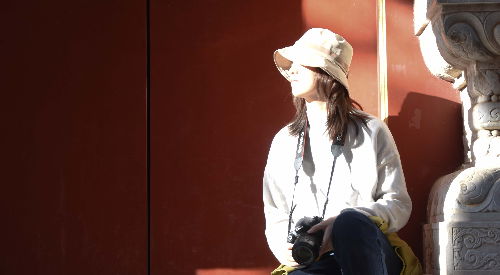

Zilin Zhou 周子琳
Architect X designer
建筑师 X 设计师
My mission is to craft living spaces that captivate with intrigue and poetry, resonating harmoniously with nature, animals, and the local community. Simultaneously, I am engrossed in the study of digitized design methodologies, aiming to broaden the dimensions of architectural design through interactive approaches.
我的使命是创造富有诗意的生活空间，与自然、动物和当地社区和谐共鸣。同时，我专注于数字化设计方法的研究，旨在通过交互式方法拓展建筑设计的维度。
EDUCATION 教育经历
-
2020-2022
Delft University of Technology 代尔夫特理工大学Master of Science in Architecture, Urbanism and Building Sciences（Track Architecture） 建筑学硕士Sino-Dutch Bilateral Exchange Scholarship 中荷互换奖学金
-
2015-2020
Nanjing University 南京大学Bachelor of Architecture in Engineering 建筑工学学士
WORK 工作经历
-
2024-Present
Tsinghua University 清华大学WX Studio - Architectural research assistant 黄蔚欣工作室 - 建筑研究助理
-
2022-2024
OPEN Architecture OPEN建筑事务所Architect 建筑师
-
2020
Roboticplus.AI (Shanghai) Co Ltd 上海大界机器人科技有限公司Parametric Construction Intern 参数化建造实习生
AWARD 获奖经历
-
2024
Competition for Service Facility of Airport Runway Park of Nanjing Dajiaochang 南京大校场机场跑道公园服务设施国际设计竞赛Shortlist 入围奖Individual Work 个人作品
-
2023
The ILLUMANATE Living Building Challenge (LBC)Competition ILLUMANATE可持续生活建筑挑战竞赛People's Choice Award 观众选择奖Team Work 团队作品Moganshan Seven Bridges Conceptual Design Competition 莫干山七桥概念设计竞赛Shortlist 入围奖Individual Work 个人作品The Architect TEAMZERO Award 天作杯-城市链条The Excellence Prize 优秀奖Individual Work 个人作品
-
2022
Competition for Chengnan River Landscape Footbridge in Nanjing 南京城南河景观步行桥竞赛Nominated Awards 提名奖Lead Architect 主创建筑师Viewing Pavilion Micro Building International Competition 南京城南河景观步行桥竞赛First Prize 一等奖Individual Work 个人作品Jiaxing Footbridge Crossing Huancheng River and Railway Competition 嘉兴大桥跨越杭甬河和铁路竞赛TOP 30 前30名Lead Architect 主创建筑师Schematic Design of the Nodes in Central Ecological Corridor of Wuhan 武汉中心生态走廊节点设计竞赛Third Prize 三等奖Lead Architect 主创建筑师
-
2020
Green Architecture National Design Competition 绿色建筑国家设计竞赛Third Prize 三等奖Lead Architect 主创建筑师International 3D Printing & Design Competition 国际3D打印与设计竞赛Excellent Team 优秀团队Team Work 团队作品
RESEARCH 研究经历
-
2022
9th Bi-City Biennale of Urbanism\Architecture 第九届深港城市\建筑双城双年展Short-term Installation Design Research 短期装置设计研究DigitalFUTURES2022 Workshop 数字未来2022工作坊Robotic Manufacturing of Timber Space-frames 木结构空间框架机器人制造
-
2020
DigitalFUTURES2020 Workshop 数字未来2020工作坊HI-Cy: Hybrid Intelligence Cy-Matters 混合智能数字物质研究2019 International Conference on Computational Design & Robotic Fabrication 2019计算设计与机器人建造国际会议Second Author, "Application of Algorithmic Generation to Kindergarten Design" Research Paper 第二作者，"算法生成在幼儿园设计中的应用"研究论文Cinematic Museum of the Everyday, Cambridge University 日常电影博物馆，剑桥大学A Workshop on Cinematic Architecture 电影建筑工作坊Undergraduate Academic Research Program, Nanjing University 南京大学本科生科研项目Gender Studies 性别研究Artificial Intelligence Interaction Workshop 人工智能交互工作坊Building interactive experience in VR through 3DUnity 通过3DUnity构建VR交互体验